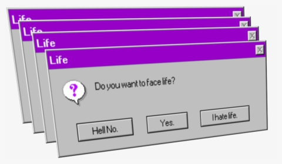

CSS está diseñado principalmente para marcar la separación del contenido del documento y la forma de presentación de este, características tales como las capas o layouts, los colores y las fuentes.
Esta separación busca mejorar la accesibilidad del documento,
proveer más flexibilidad y control en la especificación de características presentacionales, permitir que varios documentos HTML
compartan un mismo estilo usando una sola hoja
de estilos separada en un archivo .css.

JavaScript es un lenguaje de programación interpretado, dialecto del estándar ECMAScript. Se define como orientado a objetos,
Aprendimos que html es una herramienta para la creacion de una pagina web y sirve como referencia del
software.
Tambien que sirve para definir una estructura en el contenido de la pagina web.
- Protocolo iterador adoptado de Python.
- Expresiones concretas en funciones
- Uso de HTML